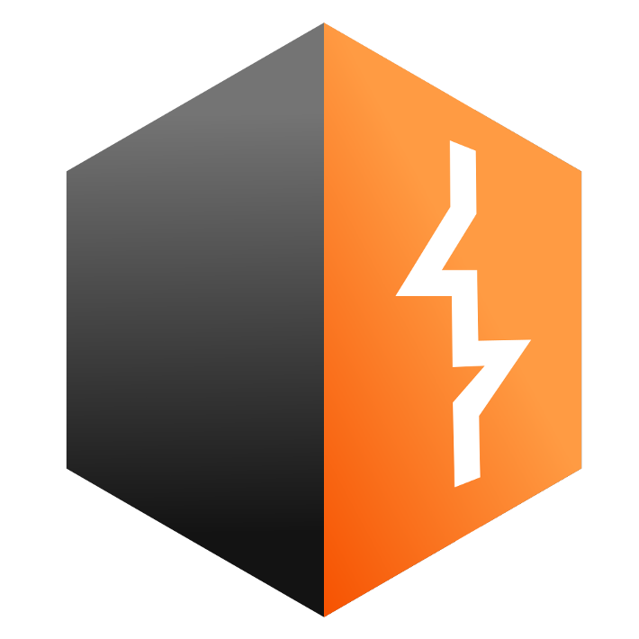

Murilo Santana Novais
Pentest e DevSecOps
Buscando minha primeira oportunidade na área de tecnologia. Possuo bases sólidas em Linux (terminal e shell) e controle de versão com Git. Tenho familiaridade com Python para automação e scripts.
Atualmente estudo segurança ofensiva (reconhecimento, análise de vulnerabilidades) e infraestrutura, evoluindo em tecnologias como Docker, Terraform e CI/CD. Meu objetivo é aplicar DevSecOps na prática, integrando segurança ao ciclo de desenvolvimento.
Meus Conhecimentos
Front-end
Back-end & Scripting
DevOps & Cloud
Cibersegurança & Redes

IPv4 • Sub-redes • Fundamentos
Projetos & Prática
Algumas das minhas automações e estudos práticos em segurança.
TESTE
Documentação passo a passo da resolução de máquinas focadas em exploração de falhas em aplicações web.
Portifólio em andamento